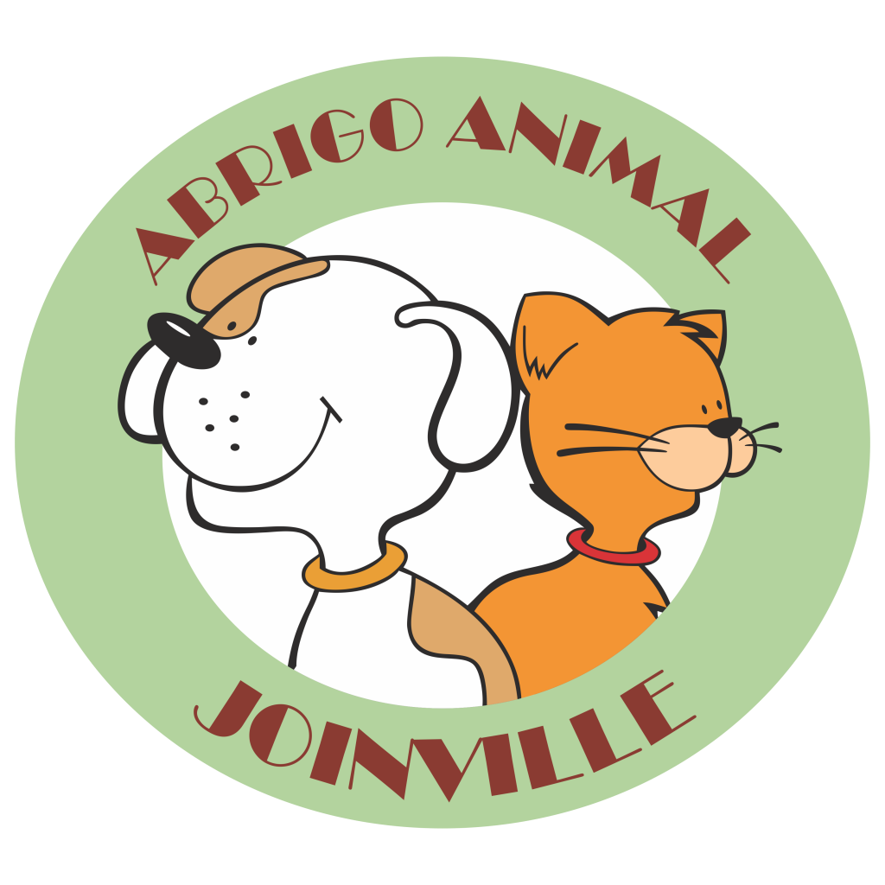
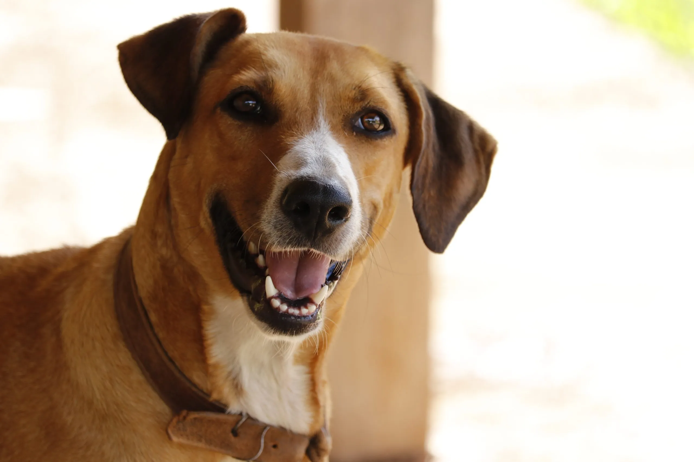
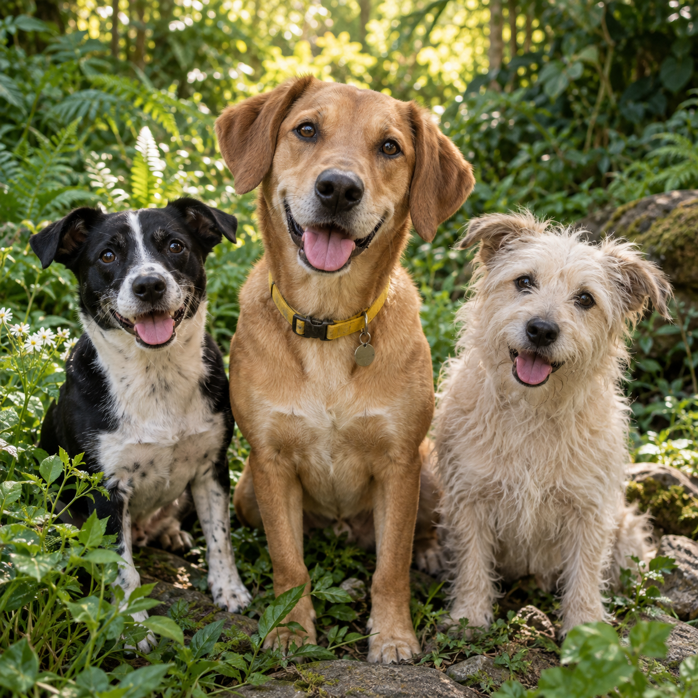

Thor
Enviada em 20/09/2026. Tenho tempo para passeios e uma rotina preparada para o Thor.

Abrigo AnimalAPADRINHAMENTO DE CÃES IDOSOS
O apadrinhamento ajuda com alimentação, consultas e medicamentos para os cães idosos.
Quero apadrinhar um idoso
CÃES DISPONÍVEIS
Veja quem está esperando por uma casa.

2 anos · MachoBrincalhão, carinhoso e cheio de energia.
Ver mais sobre Thor
3 anos · FêmeaAlegre, afetuosa e sociável.
Ver mais sobre Mel8 anos · MachoTranquilo e companheiro.
Ver mais sobre MaxROLÊ NO ABRIGO
Agende uma visita para conhecer o abrigo e passear com os cães.
Quero participar do rolê
ADOÇÃO RESPONSÁVEL
Cães resgatados que precisam de uma família e de uma rotina segura.
Conhecer os cãesCÃES DISPONÍVEIS
2 anos · Macho
Ver mais sobre Thor3 anos · Fêmea
Ver mais sobre MelPorte médio · Vacinado8 anos · Macho
Ver mais sobre MaxCÃO PARA ADOÇÃO
Thor é brincalhão, carinhoso e gosta de companhia. Procura uma casa com espaço para passear e receber atenção.
APADRINHAMENTO DE CÃES IDOSOS
Conheça os cães idosos que contam com apoio para viver com conforto.
NOSSOS VOVÔS
O apadrinhamento ajuda a pagar alimentação, consultas e medicamentos.
8 anos · Porte médioTranquilo e companheiro.
Apadrinhar MaxGosta de companhia e caminhadas calmas.
Apadrinhar BobCarinhosa e observadora.
Apadrinhar CacauBEM-VINDO DE VOLTA
Veja suas solicitações e mantenha seus dados atualizados.
E-mailCriar minha conta
CRIAR CONTA
MINHA ÁREA
BEM-VINDO(A) DE VOLTA
Mantenha seus dados atualizados para facilitar o contato da equipe.
Enviada em 20/09/2026. Tenho tempo para passeios e uma rotina preparada para o Thor.
Enviada em 19/09/2026. Quero ajudar com os cuidados mensais do Max.
FORMULÁRIO DE ADOÇÃO
Conte para a equipe como será a chegada do novo membro da família.
VISITA EM GRUPO
Escolas, lares de idosos e grupos da comunidade podem agendar uma visita para passear com os cães.
Agendar uma visitaUma experiência de educação, empatia e cuidado com os animais.
Momentos tranquilos de afeto e companhia ao lado dos cães.
Organize uma visita orientada com pessoas que querem ajudar.
AGENDAMENTO
PROTEÇÃO ANIMAL
Em situação de risco imediato, priorize os canais oficiais.
Quando houver risco imediato, acione a Polícia Militar.
Ligar 190Para fauna silvestre, venda ilegal ou infrações ambientais.
Ibama: 0800 061 8080Comunique irregularidades ambientais pelo Fala.BR.
Abrir Fala.BRRELATO PARA O ABRIGO
PAINEL RESTRITO
Organize os registros e acompanhe o dia a dia do Abrigo Animal Joinville.
Nome do usuário · telefone · CPF · endereço
Marcar em análise20 participantes · manhã · responsável e telefone
Confirmar agendamentoAPADRINHAMENTO
Ajude com alimentação, consultas e medicamentos.
ApadrinharCÃES DISPONÍVEIS
2 anos · Macho
CÃES DISPONÍVEIS
3 anos · Fêmea